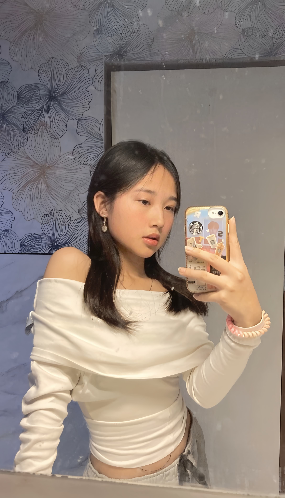
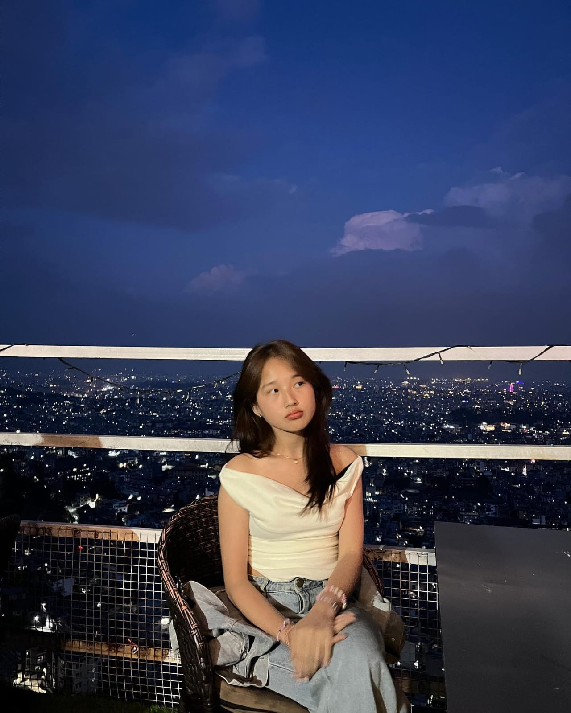
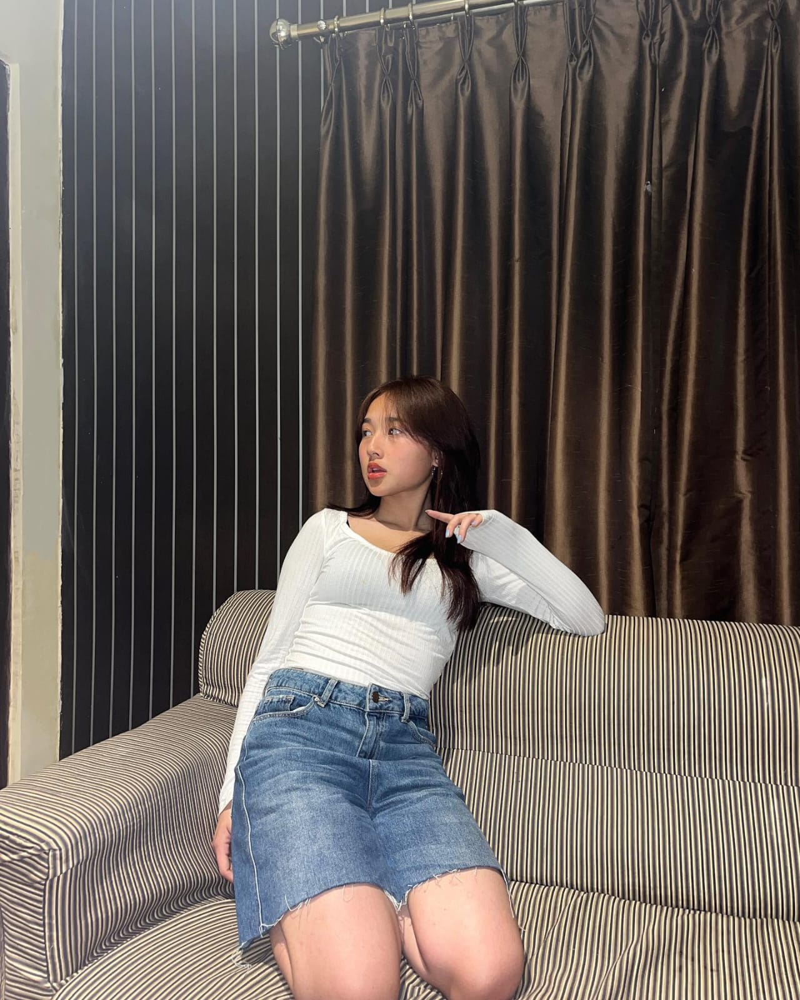
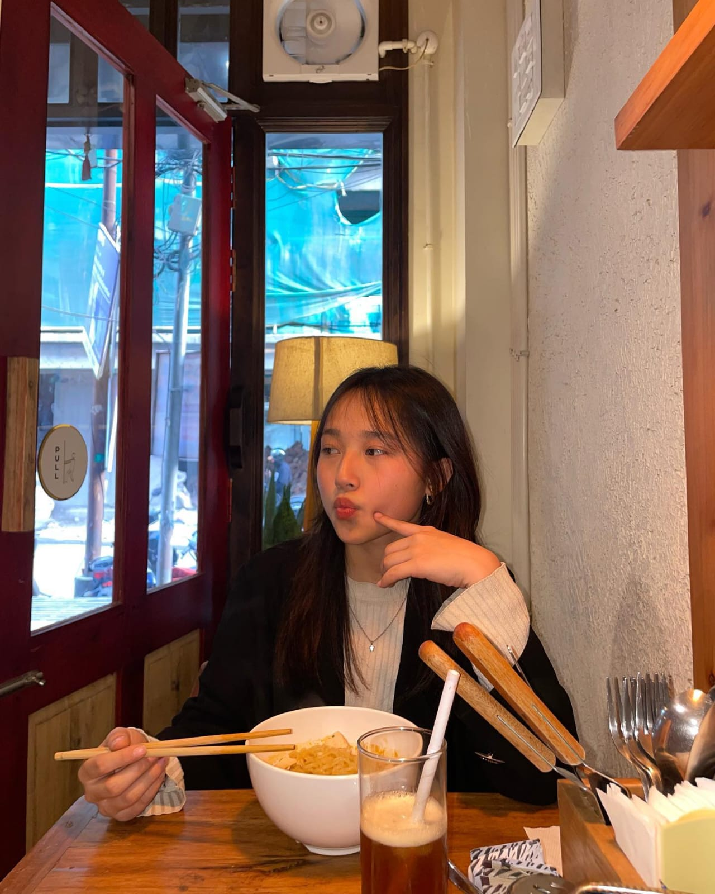
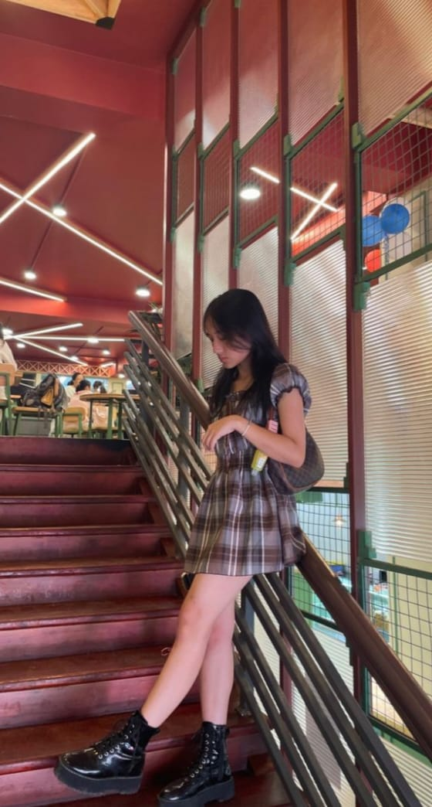
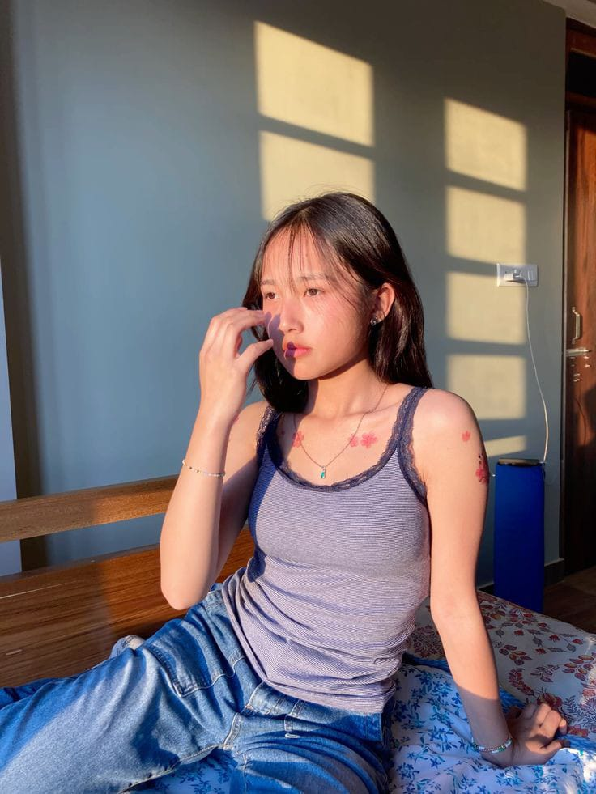
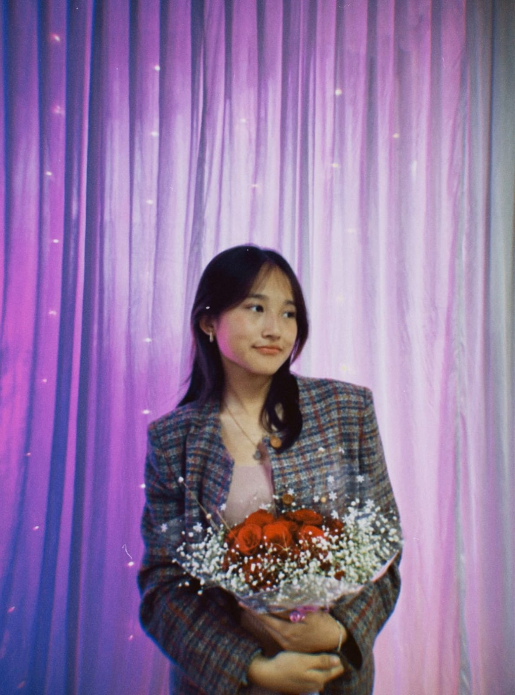

Halo! Ini Dunia Kecil Milik Tuan Putri Cayin
Seorang pemimpi, pencinta matcha, dan penjelajah momen-momen kecil.
Kenali Lebih JauhSedikit Tentang Aku

Selamat datang di duniaku! Aku adalah orang yang percaya bahwa kebahagiaan bisa ditemukan dalam secangkir teh hangat di pagi hari, alunan musik yang pas, dan tawa bersama orang-orang tersayang.
5 Fakta Unik!
- Nama Lengkap : Catherine Tyshealey Azzevoyyige Zhao
- Umur : 17 tahun
- Hobi : Menyanyi
- Makanan favorit : Pasta
- Minuman favorit : Lemontea
- Buah-buahan favorit : Strawberry
- Pacar : -
- ☕ Bisa menghabiskan waktu berjam-jam di coffee shop.
- üê± Ibu dari seekor kucing oren bernama Miko.
- üé∂ Lagu Favorit adalah Kiss, Vegaboys.
- ✈️ Punya mimpi keliling semua provinsi di Indonesia.
- üé® Sedang belajar melukis dengan cat air.
Galeri Momen
Kumpulan kenangan yang berhasil tertangkap kamera.





